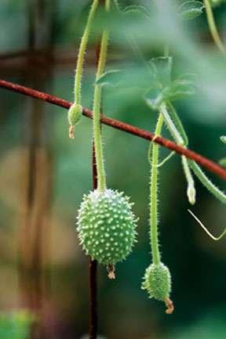
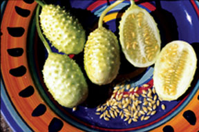
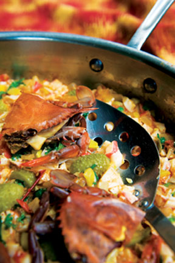
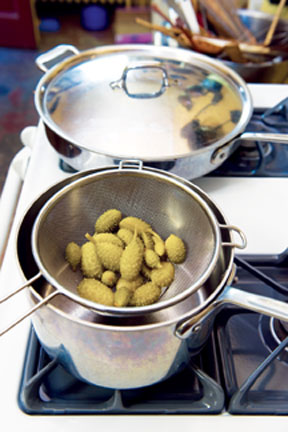

Burr gherkins, also known as West Indian burr gherkins (Cucumis anguria), are one of the old-time favorites among heirloom gardeners because of their productivity and multiple uses in the kitchen - plus their pest-free maintenance. Their flavor is mild and resembles cucumbers (when young), without the strong “green” bitterness of some common cucumbers. You can eat them raw or pickled, or even cooked like zucchini.
Burr gherkins do not have the same long, narrow shape as the better-known French gherkins, but instead are round and covered in edible dull “spikes,” strongly resembling green ... well ... burrs.
Once pickled, the flavor and texture are much the same as the French gherkins. In fact, the unusual shape of the burr gherkin makes it an interesting addition to almost any pickle mixture, but what most early American cookbooks failed to mention is that burr gherkins can be cooked like squash and served in a variety of dishes.
There was a lot of controversy in the 19th century about the origin of burr gherkins. I waded through the mountains of botanical journals devoted to this issue in 1996 when I decided to include burr gherkins in my book Heirloom Vegetable Gardening. Many Victorian botanists thought the plant came from Jamaica, but as it turned out, burr gherkins originated in West Africa and they were brought to the New World during the 1500s by both the Spanish and Portuguese, a seed exchange encouraged in part by the trans-Atlantic slave trade.
A closer look at African-based dishes in the Caribbean and South America confirms this old connection with Africa. In the Bahia region of Brazil, where Afro-Brazilian culture is the strongest, burr gherkins are called maxixe (mah-SHEE-shay) and they form the most important ingredient in a traditional dish called maxixada (mah-shee-SHAH-dah). This delicious and distinctive preparation deserves to be better-known, and because it’s a creative way to use the gherkins (especially if you like spicy foods), I have adapted a recipe (below) from Salvador, the capital of Bahia. Established in 1549, it is known today for its exquisite architecture , as well as its reputation as the center of a culinary renaissance. In Bahia, no respectable kitchen garden is without its maxixe.
Burr gherkins were introduced to the United States in the 1790s from Jamaica, with the idea that they would make excellent mini-cucumber pickles. In that period, “gherkin” was a term for cucumbers harvested when they are super small. Because the little cucumbers tended to be bitter, brining was usually required.
Burr gherkins had a milder flavor and didn’t need the brine. They became popular in the 1800s and appeared in cookbooks into the 1920s for this and two other practical reasons: First, they are hugely productive, more than most cucumbers. Secondly, because they are not the same species as cucumbers, they do not attract any of the normal cucumber problems. Cucumber beetles, leaf borers and even powdery mildew leave them alone. This is great news for the organic gardener, especially if you are fond of small gherkin pickles or want something interesting to add to stir-fries and vegetable stews.
Start the seed indoors as you would for any cucumber or melon, then establish the seedlings in pots so they develop good, strong root systems. Plant them in the garden after the threat of frost passes (about the same time you would plant tomatoes). You can let the vines ramble over the ground, or you can train them to climb on trellises or wire fencing. Because the vines are vigorous growers and are likely to spread from 6 to 8 feet, I prefer to grow the plants vertically on wire. This makes the gherkins easier to see and pick because they hang down on long stems (see image gallery), plus it prevents backache.
They do not seem to be particular about soil, although best results will come with heavy composting and regular watering during dry spells. Harvesting of small fruits should commence in about 60 days, so burr gherkins are as easy to grow in New England as they are in the Deep South. The trick is to harvest them young, before they start developing seeds. When the fruit is too old, it is seedy, tough and spiny. To decide when to harvest, test one with a sharp knife - if it cuts like butter it’s ready. This is generally when the gherkins reach 1 1⁄2 inches in length.
Fruiting will continue vigorously until frost if you keep picking the gherkins as they develop. They can be frozen for later use in soups or stir-fries, but if you let the fruit run to seed, flower production will drop off. For this reason, most commercial growers plant them in two or three week successions so they can enjoy full production all summer.
For seed saving purposes, let the gherkins ripen on the vines until they become hard and yellow. After that the fruit will begin to soften. Scoop out the seeds and pulp and put them in an uncovered jar.
Let the seeds ferment for about three to four days, or until the scum has risen to the top and the good seed has dropped to the bottom. This step is important because it sterilizes the seeds and prevents any diseases from the mother plant from affecting the next generation. Pour off the scum, rinse the seed several times in clear running water (use a sieve), then spread the seed on a screen to dry. Once the seed is dry enough to snap when bent in half, it is ready to be stored in airtight jars away from direct sunlight. I would allow at least three weeks for the drying process, although much depends on humidity levels.
Properly ripened and processed seed should maintain good germination rates for about 10 years. If you leave the burr gherkins to rot in the garden or toss them into your compost, be aware that they reseed readily, so you may end up with a bumper crop of seedlings in unexpected places the following season.
This dish is eaten over rice or a mixture of rice and beans. Traditionally, it’s cooked with dende oil (red palm oil), but I have substituted olive oil.
1/4 cup olive oil or mild-flavored cooking oil
2 cups onion, chopped
1 pound young, tender burr gherkins
1 chayote, diced (Chayote is a mild-flavored cucurbit. Peeled zucchini can serve as a substitute.)
1 tbsp garlic, minced
2 cups tomato, chopped
8 ounces picked cooked crab meat
1 cup coconut milk
2 or 3 tbsp chopped cilantro, or to taste
Zest of half a lime
Salt and freshly chopped or ground hot pepper to taste (preferably Bahian pimento de cheiro or malagueta)
Optional garnish: 4 boiled crabs cut in half
Heat oil in a large sauté pan or skillet and add onion, burr gherkins and chayote or zucchini. Cover and cook 6 minutes over medium heat, then add garlic, tomato, picked crab and coconut milk. Stir and cook uncovered until the tomato is reduced and the sauce turns light orange (about 8 minutes). Add cilantro and lime zest, then season to taste with salt and hot pepper. Once the liquids are well combined and hot (about 5 minutes), serve over rice with hot boiled crabs as a garnish. Serves 4 to 6.
Baker Creek Heirloom Seeds
417-924-8917
Landreth Seeds
800-654-2407
Food historian and Mother Earth News Contributing Editor William Woys Weaver is author of several cooking and gardening books. His wonderful history of heirlooms, 100 Vegetables and Where They Came From, is available from Mother Earth Shopping.
The Mother Earth News editors also highly recommend:
Heirloom Vegetable Gardening: A Master Gardener’s Guide to Planting, Seed Saving and Cultural History by William Woys Weaver. If you want to explore the fabulous flavors, fascinating history and amazing diversity of vegetables, this is the book to start with. Weaver profiles 280 heirloom varieties, with authoritative growing advice and incredible recipes. First published in 1997, Heirloom Vegetable Gardening has since been out of print, with used copies selling online for as much as $300. We are proud to present the original text, with color photos, as a digital book on CD-ROM. Order now.
|
 ROB CARDILLO Originating in West Africa, these funny-looking cukes can be pickled, eaten raw, or cooked like zucchini. Try them in the Brazillian stir-fry recipe at the end of this article. |
 DAVID CAVAGNARO Pickled burr gherkins are similar in flavor and texture to French cucumber gherkins, though slightly less bitter. |
 ROB CARDILLO In the Bahia region of Brazil, burr gherkins are called maxixe (mah-SHEE-shay) and they form the most important ingredient in a traditional dish called maxixada (mah-shee-SHAH-dah). |
|
 ROB CARDILLO Burr gherkins aren’t just for pickling. They can be cooked like squash and served in a variety of dishes. |
|
|